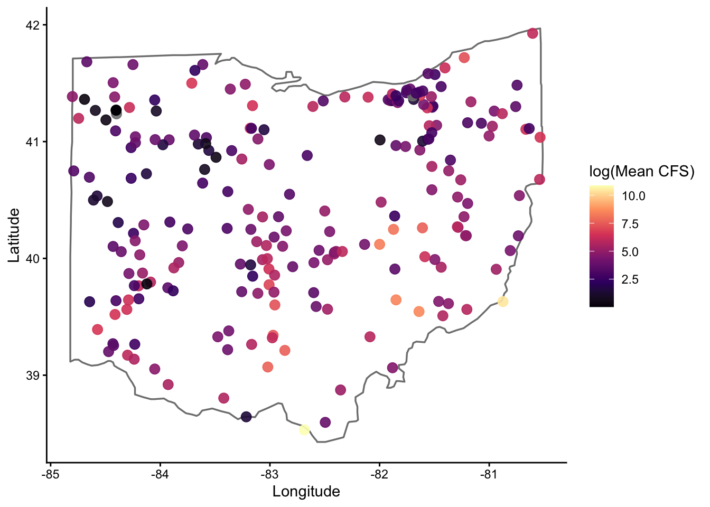

#install.packages('librarian')
librarian::shelf(tidyverse, dataRetrieval, rnaturalearth)Code
This page houses a curated set of code examples designed to support students as they develop their own analytical frameworks. Rather than prescribing a single workflow, these examples introduce a range of R packages, functions, and approaches that students may, or may not be, accustomed to using in their own work. The goal is to expose students to different ways of working with data and to help them identify tools that are most appropriate for their research questions.
Students are encouraged to explore the code, modify it for their own purposes, and combine ideas across examples as their analyses. Code examples are grouped by theme (e.g., data retrieval, modeling, visualization).
Data Retrieval
Gathering Hydrology Data
Below we showcase code that can be used to gather data from stream gauges maintained by the United States Geological Survey (USGS) using the dataRetrieval package. While some of you may be aware of (or even familiar with) the package, there are some relatively new (as of 11/2025) features outlined by USGS here.
Housekeeping
Load necessary packages
if you do not have librarian installed, you will need to install it first
librarian() is nice because it automatically installs, updates, and attaches packages
First, we will use the readNWISdata() in the dataRetrieval package to pull all stream flow (CFS, i.e., parameter code 00060) data for the state of Ohio - the default is daily average (i.e., stat code **00003* as seen in rename()). Check out the link to peruse all the parameter codes and their associated information
site_hydro <- readNWISdata(stateCd = 'OH',
parameterCd = '00060',
startDate = '2023-12-01',
endDate = '2023-12-31') |>
janitor::clean_names() |>
rename(flow_cfs = x_00060_00003,
date = date_time) |>
mutate(year = year(date),
month = month(date),
day = day(date)) |>
select(date, year, month, day, site_no, flow_cfs)GET:https://waterservices.usgs.gov/nwis/dv/?format=waterml%2C1.1&stateCd=OH¶meterCd=00060&startDT=2023-12-01&endDT=2023-12-31I generally despise capital letters in column names, so I usually clean them up using the clean_names() function in the janitor package. I also frequently use the glimpse() function to make sure my code is running as planned.
glimpse(site_hydro)Rows: 7,004
Columns: 6
$ date <dttm> 2023-12-01, 2023-12-02, 2023-12-03, 2023-12-04, 2023-12-05, …
$ year <dbl> 2023, 2023, 2023, 2023, 2023, 2023, 2023, 2023, 2023, 2023, 2…
$ month <dbl> 12, 12, 12, 12, 12, 12, 12, 12, 12, 12, 12, 12, 12, 12, 12, 1…
$ day <int> 1, 2, 3, 4, 5, 6, 7, 8, 9, 10, 11, 12, 13, 14, 15, 16, 17, 18…
$ site_no <chr> "03090500", "03090500", "03090500", "03090500", "03090500", "…
$ flow_cfs <dbl> 37.1, 36.1, 35.7, 35.4, 35.1, 33.5, 33.3, 44.7, 49.6, 199.0, …Next, we can pull out the distinct() sites to look up further metadata using the readNWISsite() function for each site_no
sites <- site_hydro |>
distinct(site_no)
site_info <- readNWISsite(siteNumbers = sites$site_no) |>
select(site_no, station_nm, dec_lat_va, dec_long_va) |>
rename(lat = dec_lat_va,
lon = dec_long_va,
river = station_nm) |>
janitor::clean_names()GET:https://waterservices.usgs.gov/nwis/site/?siteOutput=Expanded&format=rdb&site=03090500,03091500,03092090,03092460,03093000,03094000,03094704,03095500,03098600,03098700,03099500,03109500,03110000,03111500,03111548,03113990,03114306,03115400,03115644,03115712,03115786,03115917,03116000,03116077,03116196,03117000,03117500,03118000,03118500,03120500,03121500,03124500,03125900,03126000,03126910,03127000,03128500,03129000,03129197,03131300,03136500,03139000,03140000,03140500,03141500,03141870,03142000,03144000,03144500,03144816,03145000,03145173,03145483,03145534,03146000,03146402,03146500,03149500,03150000,03150500,03156400,03157000,03157500,03159500,03159540,03202000,03205470,03216070,03217424,03217500,03219500,03219781,03220000,03221000,03221646,03223425,03225500,03226800,03227107,03227500,03228300,03228500,03228689,03228750,03228805,03229500,03229610,03229796,03230310,03230427,03230450,03230500,03230700,03230800,03231500,03232000,03232300,03232500,03234000,03234300,03234500,03237020,03237280,03237500,03238495,03240000,03241500,03244936,03245500,03246500,03247500,03255349,03255420,03259000,03260706,03261500,03261950,03262000,03262500,03262700,03263000,03264000,03265000,03266000,03266560,03267000,03267900,03269500,03270000,03270500,03271000,03271300,03271500,03271620,03272000,03272100,03272700,03274000,03322485,04177000,04177266,04178000,04180988,04181049,04183500,04183979,04184500,04185000,04185318,04185440,04185935,04186500,04187100,04188100,04188252,04188324,04188337,04188400,04188433,04188496,04189000,04189131,04189174,04189260,04190000,04191058,04191444,04191500,04192500,04192574,04192599,04193500,04193999,04195500,04195820,04196000,04196500,04196800,04197100,04197137,04197152,04197170,04198000,04199000,04199155,04199500,04200500,04201400,04201409,04201423,04201484,04201495,04201500,04201526,04202000,04203900,04206000,04206413,04206416,04206425,04206448,04207200,04208000,04208347,04208460,042085017,04208502,04208684,04208700,04208923,04209000,04212100,04213000,394653084072100,402913084285400,402958084363300,410014081362600,410051081594500,410121081330300,410433081312500,411607084241200,411610084240800,412141081412100,412325081415500,412453081395500,412624081450700glimpse(site_info)Rows: 226
Columns: 4
$ site_no <chr> "03090500", "03091500", "03092090", "03092460", "03093000", "0…
$ river <chr> "Mahoning River bl Berlin Dam nr Berlin Center OH", "Mahoning …
$ lat <dbl> 41.04839, 41.13145, 41.16145, 41.15700, 41.26117, 41.23922, 41…
$ lon <dbl> -81.00120, -80.97120, -81.19705, -81.07176, -80.95426, -80.880…Lastly, we can pull the site hydrology and spatial information together using a left_join() function.
hydro <- site_hydro |>
left_join(site_info) |>
mutate(year = year(date),
month = month(date),
day = day(date)) |>
select(date, year, month, day, river, site_no, flow_cfs, lat, lon)Joining with `by = join_by(site_no)`For those not familiar, left_join() is one of many joins functions. I have attached a pretty robust introduction to these here. However, to be frank.. I rarely use anything other than left_join() (though see anti_join()), though I am certain there are reason to.
glimpse(hydro)Rows: 7,004
Columns: 9
$ date <dttm> 2023-12-01, 2023-12-02, 2023-12-03, 2023-12-04, 2023-12-05, …
$ year <dbl> 2023, 2023, 2023, 2023, 2023, 2023, 2023, 2023, 2023, 2023, 2…
$ month <dbl> 12, 12, 12, 12, 12, 12, 12, 12, 12, 12, 12, 12, 12, 12, 12, 1…
$ day <int> 1, 2, 3, 4, 5, 6, 7, 8, 9, 10, 11, 12, 13, 14, 15, 16, 17, 18…
$ river <chr> "Mahoning River bl Berlin Dam nr Berlin Center OH", "Mahoning…
$ site_no <chr> "03090500", "03090500", "03090500", "03090500", "03090500", "…
$ flow_cfs <dbl> 37.1, 36.1, 35.7, 35.4, 35.1, 33.5, 33.3, 44.7, 49.6, 199.0, …
$ lat <dbl> 41.04839, 41.04839, 41.04839, 41.04839, 41.04839, 41.04839, 4…
$ lon <dbl> -81.0012, -81.0012, -81.0012, -81.0012, -81.0012, -81.0012, -…For a look at the spatial distribution of gauges, lets do a quick plot
hydro |>
group_by(site_no, lat, lon) |>
summarize(flow_m = mean(flow_cfs, na.rm = TRUE),
.groups = 'drop') |>
ggplot(aes(x = lon, y = lat, color = log1p(flow_m))) +
borders("state", regions = "ohio",
color = "black", linewidth = 0.6, fill = NA) +
geom_point(size = 3, alpha = 0.9) +
scale_color_viridis_c(option = "magma") +
theme_classic() +
labs(x = "Longitude", y = "Latitude",
color = 'log(Mean CFS)')
For those unfamiliar, the borders() function is very coarse, but good for a quick look like this
Next, we will use the readNWISdv() in the dataRetrieval package to pull stream flow (CFS) data for a list of sites, as opposed to the entire state as done above
First, we will create a list of sites with their site numbers. I have chose to use the tribble() function here. For those unfamiliar with tribble(), I have added some background information about tables, tibbles, and tribbles (oh my) here. When dealing with a lot of different sites it will be best to enter data into an excel document and read it in, however.
site_hydro <- tribble(
~river, ~siteNumber,
"Scioto-Columbus", "03227500",
"Maumuee-Defiance", "04192500",
"Little Muskingum-Bloomfield", "03115400",
"Little Miami-Milford", "03245500",
"Hocking-Athens", "03159500",
"Olentangy-Deleware", "03225500",
)Now that we have our sites, it is time to pull the flow data (parameter code 00060) for all sites using the map() function in the purrr package. For those unaware, the map() function will change your left if you let it. Ditch the for loops and join us in the tidyverse. See video here for full explanation of the map() function, as well as map_dbl() and map_dfr() :)
hydro <- site_hydro |>
mutate(
data = map(
siteNumber,
~readNWISdv(
siteNumbers = .x,
parameterCd = '00060',
startDate = '2023-12-01',
endDate = '2023-12-31'
)
)
) |>
dplyr::select(river, siteNumber, data) |>
unnest(data) |>
rename(flow_cfs = X_00060_00003,
date = Date) |>
dplyr::select(river, flow_cfs, date) |>
mutate(year = year(date),
month = month(date),
day = day(date)) |>
dplyr::select(date, year, month, day,
river,
flow_cfs)GET:https://waterservices.usgs.gov/nwis/dv/?site=03227500&format=waterml%2C1.1&ParameterCd=00060&StatCd=00003&startDT=2023-12-01&endDT=2023-12-31GET:https://waterservices.usgs.gov/nwis/dv/?site=04192500&format=waterml%2C1.1&ParameterCd=00060&StatCd=00003&startDT=2023-12-01&endDT=2023-12-31GET:https://waterservices.usgs.gov/nwis/dv/?site=03115400&format=waterml%2C1.1&ParameterCd=00060&StatCd=00003&startDT=2023-12-01&endDT=2023-12-31GET:https://waterservices.usgs.gov/nwis/dv/?site=03245500&format=waterml%2C1.1&ParameterCd=00060&StatCd=00003&startDT=2023-12-01&endDT=2023-12-31GET:https://waterservices.usgs.gov/nwis/dv/?site=03159500&format=waterml%2C1.1&ParameterCd=00060&StatCd=00003&startDT=2023-12-01&endDT=2023-12-31GET:https://waterservices.usgs.gov/nwis/dv/?site=03225500&format=waterml%2C1.1&ParameterCd=00060&StatCd=00003&startDT=2023-12-01&endDT=2023-12-31Take a quick glimpse to make sure all went as planned
glimpse(hydro)Rows: 186
Columns: 6
$ date <date> 2023-12-01, 2023-12-02, 2023-12-03, 2023-12-04, 2023-12-05, …
$ year <dbl> 2023, 2023, 2023, 2023, 2023, 2023, 2023, 2023, 2023, 2023, 2…
$ month <dbl> 12, 12, 12, 12, 12, 12, 12, 12, 12, 12, 12, 12, 12, 12, 12, 1…
$ day <int> 1, 2, 3, 4, 5, 6, 7, 8, 9, 10, 11, 12, 13, 14, 15, 16, 17, 18…
$ river <chr> "Scioto-Columbus", "Scioto-Columbus", "Scioto-Columbus", "Sci…
$ flow_cfs <dbl> 382, 327, 238, 229, 255, 279, 237, 227, 351, 530, 372, 783, 7…Next (and just for fun), I wanted to highlight how to use the map2() function, also maintained within the purrr package. Where map() iterates a function over a single vector or list, map2() iterates a function over (you guessed it) two vectors or lists.
I have set everything up according to our first example below. However, in this example I want to pull flow and temperature data from these sites so I need to specify that in terms of parameter codes (i.e., site_params). I also need to make sure that flow and temperature data is retrieved for all sites (where available). To create a data frame with all unique combinations of site and parameter code, I used the crossing() function.
site_hydro <- tribble(
~river, ~siteNumber,
"Scioto-Columbus", "03227500",
"Maumuee-Defiance", "04192500",
"Little Muskingum-Bloomfield", "03115400",
"Little Miami-Milford", "03245500",
"Hocking-Athens", "03159500",
"Olentangy-Deleware", "03225500"
)
site_params <- tribble(
~parameterCd, ~var,
'00060', 'FlowCFS',
'00010', 'WaterTempC'
)
cross <- crossing(site_hydro, site_params)hydro_and_temp <- cross |>
mutate(data = map2(
siteNumber,
parameterCd,
~readNWISdv(
siteNumbers = .x,
parameterCd = .y,
startDate = "2023-12-01",
endDate = "2023-12-31"
)
)) |>
dplyr::select(river, siteNumber, parameterCd, var, data) |>
unnest(data) |>
rename(flow_cfs = X_00060_00003,
temp_c = X_00010_00003,
date = Date) |>
mutate(year = year(date),
month = month(date),
day = day(date)) |>
dplyr::select(date, year, month, day, river, flow_cfs, temp_c) |>
pivot_longer(flow_cfs:temp_c, names_to = 'metric', values_to = 'value') |>
na.omit() |>
arrange(metric)GET:https://waterservices.usgs.gov/nwis/dv/?site=03159500&format=waterml%2C1.1&ParameterCd=00010&StatCd=00003&startDT=2023-12-01&endDT=2023-12-31GET:https://waterservices.usgs.gov/nwis/dv/?site=03159500&format=waterml%2C1.1&ParameterCd=00060&StatCd=00003&startDT=2023-12-01&endDT=2023-12-31GET:https://waterservices.usgs.gov/nwis/dv/?site=03245500&format=waterml%2C1.1&ParameterCd=00010&StatCd=00003&startDT=2023-12-01&endDT=2023-12-31GET:https://waterservices.usgs.gov/nwis/dv/?site=03245500&format=waterml%2C1.1&ParameterCd=00060&StatCd=00003&startDT=2023-12-01&endDT=2023-12-31GET:https://waterservices.usgs.gov/nwis/dv/?site=03115400&format=waterml%2C1.1&ParameterCd=00010&StatCd=00003&startDT=2023-12-01&endDT=2023-12-31GET:https://waterservices.usgs.gov/nwis/dv/?site=03115400&format=waterml%2C1.1&ParameterCd=00060&StatCd=00003&startDT=2023-12-01&endDT=2023-12-31GET:https://waterservices.usgs.gov/nwis/dv/?site=04192500&format=waterml%2C1.1&ParameterCd=00010&StatCd=00003&startDT=2023-12-01&endDT=2023-12-31GET:https://waterservices.usgs.gov/nwis/dv/?site=04192500&format=waterml%2C1.1&ParameterCd=00060&StatCd=00003&startDT=2023-12-01&endDT=2023-12-31GET:https://waterservices.usgs.gov/nwis/dv/?site=03225500&format=waterml%2C1.1&ParameterCd=00010&StatCd=00003&startDT=2023-12-01&endDT=2023-12-31GET:https://waterservices.usgs.gov/nwis/dv/?site=03225500&format=waterml%2C1.1&ParameterCd=00060&StatCd=00003&startDT=2023-12-01&endDT=2023-12-31GET:https://waterservices.usgs.gov/nwis/dv/?site=03227500&format=waterml%2C1.1&ParameterCd=00010&StatCd=00003&startDT=2023-12-01&endDT=2023-12-31GET:https://waterservices.usgs.gov/nwis/dv/?site=03227500&format=waterml%2C1.1&ParameterCd=00060&StatCd=00003&startDT=2023-12-01&endDT=2023-12-31Data Wrangling
Linking trait data
Below we showcase code that can be used to generate a ‘species’ list and link it to an existing trait dataset
Housekeeping
Load necessary packages
if you do not have librarian installed, you will need to install it first
#install.packages('librarian')
librarian::shelf(tidyverse, skimr)Similar to above, I am using the tribble() and crossing() functions to generate simulate some data. I am coupling these functions with the rlnorm() function create an example count dataset of fishes commonly encountered in the state of Ohio
species <- tibble::tribble(
~common_name, ~family, ~genus, ~species,
"Largemouth Bass", "Centrarchidae", "Micropterus", "salmoides",
"Smallmouth Bass", "Centrarchidae", "Micropterus", "dolomieu",
"Bluegill", "Centrarchidae", "Lepomis", "macrochirus",
"Channel Catfish", "Ictaluridae", "Ictalurus", "punctatus",
"Flathead Catfish", "Ictaluridae", "Pylodictis", "olivaris",
"Common Carp", "Cyprinidae", "Cyprinus", "carpio",
"Gizzard Shad", "Clupeidae", "Dorosoma", "cepedianum",
"Emerald Shiner", "Cyprinidae", "Notropis", "atherinoides",
"Creek Chub", "Cyprinidae", "Semotilus", "atromaculatus",
"Logperch", "Percidae", "Percina", "caprodes"
)
sites <- tribble(
~river,
"Scioto-Columbus",
"Maumuee-Defiance",
"Little Muskingum-Bloomfield",
"Little Miami-Milford",
"Hocking-Athens",
"Olentangy-Deleware",
)
years <- tibble(year = 2000:2025)
dat <- crossing(species, sites, years) |>
select(year, river, common_name, family, genus, species) |>
mutate(count = round(rlnorm(n(), meanlog = 1, sdlog = 1)))glimpse(dat)Rows: 1,560
Columns: 7
$ year <int> 2000, 2001, 2002, 2003, 2004, 2005, 2006, 2007, 2008, 2009…
$ river <chr> "Hocking-Athens", "Hocking-Athens", "Hocking-Athens", "Hoc…
$ common_name <chr> "Bluegill", "Bluegill", "Bluegill", "Bluegill", "Bluegill"…
$ family <chr> "Centrarchidae", "Centrarchidae", "Centrarchidae", "Centra…
$ genus <chr> "Lepomis", "Lepomis", "Lepomis", "Lepomis", "Lepomis", "Le…
$ species <chr> "macrochirus", "macrochirus", "macrochirus", "macrochirus"…
$ count <dbl> 5, 2, 1, 4, 0, 2, 2, 2, 11, 4, 3, 1, 1, 3, 1, 5, 1, 13, 5,…I am going to take a similar approach to generate an example trait dataset
traits <- tibble::tribble(
~species,
~max_length_mm, ~age_maturity_yr, ~longevity_yr, ~egg_size_mm,
~mean_clutch_size, ~parental_care,
~larval_growth_mm_mo, ~yoy_growth_mm_yr, ~adult_growth_mm_yr,
~spawn_season_d,
"Largemouth Bass", 600, 3.5, 14, 1.8, 120000, 3, 15, 120, 40, 90,
"Smallmouth Bass", 550, 4.0, 12, 2.0, 90000, 3, 14, 110, 38, 80,
"Spotted Bass", 500, 3.0, 11, 1.7, 85000, 3, 14, 105, 36, 85,
"Bluegill", 300, 2.0, 8, 1.2, 45000, 2, 18, 95, 32, 110,
"Redear Sunfish", 350, 2.5, 9, 1.4, 52000, 2, 17, 100, 33, 105,
"Green Sunfish", 280, 1.8, 7, 1.1, 40000, 2, 19, 90, 30, 115,
"Channel Catfish", 800, 5.0, 18, 5.5, 18000, 5, 10, 85, 30, 60,
"Flathead Catfish", 1100, 6.0, 22, 6.2, 9000, 6, 9, 75, 28, 55,
"Blue Catfish", 1200, 6.5, 25, 6.0, 20000, 5, 9, 80, 29, 65,
"Common Carp", 1000, 4.0, 20, 1.5, 250000, 0, 16, 130, 42, 120,
"Grass Carp", 1300, 5.0, 22, 1.6, 300000, 0, 15, 135, 45, 125,
"Goldfish", 400, 2.0, 10, 1.3, 100000, 0, 17, 110, 35, 115,
"Gizzard Shad", 450, 2.0, 10, 1.1, 180000, 0, 20, 140, 48, 130,
"Threadfin Shad", 300, 1.5, 6, 0.9, 160000, 0, 22, 150, 50, 140,
"Emerald Shiner", 120, 1.0, 4, 0.9, 12000, 0, 25, 160, 55, 100,
"Sand Shiner", 140, 1.2, 5, 1.0, 15000, 0, 24, 155, 52, 105,
"Creek Chub", 220, 2.0, 6, 1.0, 25000, 1, 21, 145, 48, 110,
"Bluntnose Minnow", 110, 1.0, 3, 0.8, 10000, 0, 26, 165, 58, 95,
"Logperch", 180, 2.5, 7, 1.3, 18000, 1, 18, 125, 40, 75,
"Johnny Darter", 90, 1.2, 4, 1.0, 8000, 1, 20, 135, 45, 70,
"Yellow Perch", 400, 3.0, 10, 2.1, 50000, 0, 16, 115, 37, 85,
"Freshwater Drum", 700, 4.5, 16, 1.9, 200000, 0, 14, 105, 35, 95,
"White Crappie", 420, 3.0, 9, 1.6, 120000, 2, 17, 120, 38, 100,
"Black Crappie", 450, 3.2, 10, 1.7, 130000, 2, 16, 118, 37, 98
)glimpse(traits)Rows: 24
Columns: 11
$ species <chr> "Largemouth Bass", "Smallmouth Bass", "Spotted Bas…
$ max_length_mm <dbl> 600, 550, 500, 300, 350, 280, 800, 1100, 1200, 100…
$ age_maturity_yr <dbl> 3.5, 4.0, 3.0, 2.0, 2.5, 1.8, 5.0, 6.0, 6.5, 4.0, …
$ longevity_yr <dbl> 14, 12, 11, 8, 9, 7, 18, 22, 25, 20, 22, 10, 10, 6…
$ egg_size_mm <dbl> 1.8, 2.0, 1.7, 1.2, 1.4, 1.1, 5.5, 6.2, 6.0, 1.5, …
$ mean_clutch_size <dbl> 120000, 90000, 85000, 45000, 52000, 40000, 18000, …
$ parental_care <dbl> 3, 3, 3, 2, 2, 2, 5, 6, 5, 0, 0, 0, 0, 0, 0, 0, 1,…
$ larval_growth_mm_mo <dbl> 15, 14, 14, 18, 17, 19, 10, 9, 9, 16, 15, 17, 20, …
$ yoy_growth_mm_yr <dbl> 120, 110, 105, 95, 100, 90, 85, 75, 80, 130, 135, …
$ adult_growth_mm_yr <dbl> 40, 38, 36, 32, 33, 30, 30, 28, 29, 42, 45, 35, 48…
$ spawn_season_d <dbl> 90, 80, 85, 110, 105, 115, 60, 55, 65, 120, 125, 1…The first thing we will want to do is create a ‘species’ list. I put species in quotations, as we do not always have species-level information. All you need here is a dataset that includes all of the unique taxonomic identities present in your larger dataset
species_list <- dat |>
dplyr::select(common_name, family, genus, species) |>
distinct()
print(species_list)# A tibble: 10 × 4
common_name family genus species
<chr> <chr> <chr> <chr>
1 Bluegill Centrarchidae Lepomis macrochirus
2 Channel Catfish Ictaluridae Ictalurus punctatus
3 Common Carp Cyprinidae Cyprinus carpio
4 Creek Chub Cyprinidae Semotilus atromaculatus
5 Emerald Shiner Cyprinidae Notropis atherinoides
6 Flathead Catfish Ictaluridae Pylodictis olivaris
7 Gizzard Shad Clupeidae Dorosoma cepedianum
8 Largemouth Bass Centrarchidae Micropterus salmoides
9 Logperch Percidae Percina caprodes
10 Smallmouth Bass Centrarchidae Micropterus dolomieu Next, we link the trait data to our taxonomic data - ensure that you have a key column for which you can join the two discrete data streams (i.e., rename = species). If ‘key column’ is a new concept to you, please check out this article that does a great job discussing terminology and approaches to data wrangling and harmonization :)
traits <- traits |>
rename(common_name = species)
species_traits <- species_list |> left_join(traits)Joining with `by = join_by(common_name)`glimpse(species_traits)Rows: 10
Columns: 14
$ common_name <chr> "Bluegill", "Channel Catfish", "Common Carp", "Cre…
$ family <chr> "Centrarchidae", "Ictaluridae", "Cyprinidae", "Cyp…
$ genus <chr> "Lepomis", "Ictalurus", "Cyprinus", "Semotilus", "…
$ species <chr> "macrochirus", "punctatus", "carpio", "atromaculat…
$ max_length_mm <dbl> 300, 800, 1000, 220, 120, 1100, 450, 600, 180, 550
$ age_maturity_yr <dbl> 2.0, 5.0, 4.0, 2.0, 1.0, 6.0, 2.0, 3.5, 2.5, 4.0
$ longevity_yr <dbl> 8, 18, 20, 6, 4, 22, 10, 14, 7, 12
$ egg_size_mm <dbl> 1.2, 5.5, 1.5, 1.0, 0.9, 6.2, 1.1, 1.8, 1.3, 2.0
$ mean_clutch_size <dbl> 45000, 18000, 250000, 25000, 12000, 9000, 180000, …
$ parental_care <dbl> 2, 5, 0, 1, 0, 6, 0, 3, 1, 3
$ larval_growth_mm_mo <dbl> 18, 10, 16, 21, 25, 9, 20, 15, 18, 14
$ yoy_growth_mm_yr <dbl> 95, 85, 130, 145, 160, 75, 140, 120, 125, 110
$ adult_growth_mm_yr <dbl> 32, 30, 42, 48, 55, 28, 48, 40, 40, 38
$ spawn_season_d <dbl> 110, 60, 120, 110, 100, 55, 130, 90, 75, 80skimr::skim(species_traits)| Name | species_traits |
| Number of rows | 10 |
| Number of columns | 14 |
| _______________________ | |
| Column type frequency: | |
| character | 4 |
| numeric | 10 |
| ________________________ | |
| Group variables | None |
Variable type: character
| skim_variable | n_missing | complete_rate | min | max | empty | n_unique | whitespace |
|---|---|---|---|---|---|---|---|
| common_name | 0 | 1 | 8 | 16 | 0 | 10 | 0 |
| family | 0 | 1 | 8 | 13 | 0 | 5 | 0 |
| genus | 0 | 1 | 7 | 11 | 0 | 9 | 0 |
| species | 0 | 1 | 6 | 13 | 0 | 10 | 0 |
Variable type: numeric
| skim_variable | n_missing | complete_rate | mean | sd | p0 | p25 | p50 | p75 | p100 | hist |
|---|---|---|---|---|---|---|---|---|---|---|
| max_length_mm | 0 | 1 | 532.00 | 344.80 | 120.0 | 240.00 | 500.0 | 750.00 | 1.1e+03 | ▇▂▃▂▃ |
| age_maturity_yr | 0 | 1 | 3.20 | 1.57 | 1.0 | 2.00 | 3.0 | 4.00 | 6.0e+00 | ▇▂▆▂▂ |
| longevity_yr | 0 | 1 | 12.10 | 6.23 | 4.0 | 7.25 | 11.0 | 17.00 | 2.2e+01 | ▇▅▅▂▅ |
| egg_size_mm | 0 | 1 | 2.25 | 1.94 | 0.9 | 1.12 | 1.4 | 1.95 | 6.2e+00 | ▇▁▁▁▂ |
| mean_clutch_size | 0 | 1 | 76700.00 | 83062.29 | 9000.0 | 18000.00 | 35000.0 | 112500.00 | 2.5e+05 | ▇▁▁▁▁ |
| parental_care | 0 | 1 | 2.10 | 2.13 | 0.0 | 0.25 | 1.5 | 3.00 | 6.0e+00 | ▇▂▃▁▃ |
| larval_growth_mm_mo | 0 | 1 | 16.60 | 4.90 | 9.0 | 14.25 | 17.0 | 19.50 | 2.5e+01 | ▅▅▇▅▂ |
| yoy_growth_mm_yr | 0 | 1 | 118.50 | 27.29 | 75.0 | 98.75 | 122.5 | 137.50 | 1.6e+02 | ▅▂▇▅▅ |
| adult_growth_mm_yr | 0 | 1 | 40.10 | 8.62 | 28.0 | 33.50 | 40.0 | 46.50 | 5.5e+01 | ▇▂▇▅▂ |
| spawn_season_d | 0 | 1 | 93.00 | 25.30 | 55.0 | 76.25 | 95.0 | 110.00 | 1.3e+02 | ▇▇▇▇▇ |
In addition to my usual glimpse(), you will notice I used the skim() function from the skimr package - super useful for a quick look at how data are distributed or if data are missing